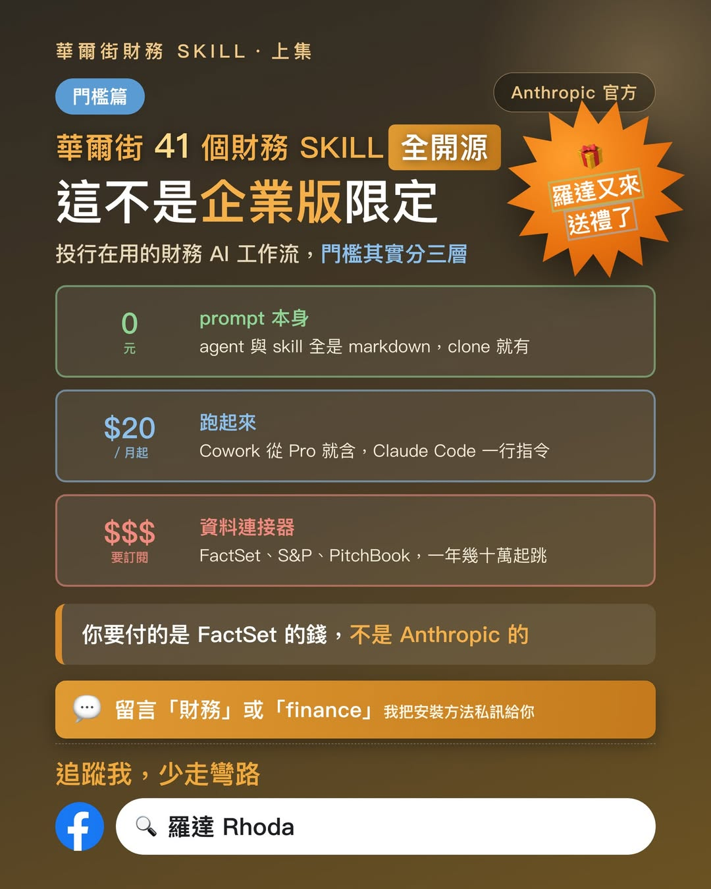

Facebook｜羅達 Rhoda：Anthropic financial-services repo 的華爾街財務 Skills 門檻拆解
來源是羅達 Rhoda 在 Facebook 分享的長文與資訊圖。貼文主軸是：Anthropic 公開的 `anthropics/financial-services` repo 不只是「10 個金融 AI 代理」，也包含一批可直接閱讀的 financial-services skills / prompts；一般使用者可先從開源 prompt 與 Claude Code / Cowork plugin 入口理解工作流，真正高門檻通常是 FactSet、S&P Global、PitchBook、Moody's、LSEG 等機構級資料源訂閱，而不是「一定要 Anthropic 企業版」。

公開 Facebook 內容
Facebook 分享連結解析後的 canonical post URL 為 `https://www.facebook.com/AV8D.levelup/posts/pfbid02KSKU7KLTTNR8m38Vrr23LEJtKqVfwybUV1pz47N73SAnVB1UVUNzKV8mrsLumnH1l`。頁面擷取時，貼文可見約 183 個心情、594 則留言、33 次分享；這些互動數會隨時間變動。
貼文重點包括：
- 作者指出 Anthropic 前陣子公開的是「10 個代理加上四十幾個 skill」，並採 Apache-2.0 開源，prompt / skill 原始檔可直接閱讀。
- 作者把使用門檻拆成三層：第一層是 repo 裡的 markdown prompt / skill，本身 0 元；第二層是用 Claude Cowork 或 Claude Code 跑起來；第三層才是 FactSet、S&P Global、PitchBook、Moody's、LSEG 等資料連接器與機構資料庫訂閱。
- 作者認為一般人可跳過第三層，先用自己整理好的財報或資料餵給相關 skill；資料源是否能進來才是真正差異。
- 作者提到 Claude Code 安裝路徑相對單純；Cowork plugin 清單中容易混淆「Financial Analysis」與另一個「Finance」plugin，前者偏投行 / 研究 / 私募分析流程，後者偏會計財務作業。
- 貼文 CTA 要求留言「財務」或「finance」以取得安裝懶人包；本次公開頁面可見留言與作者回覆狀態，但未擷取到私訊懶人包內容，因此本文不補寫未公開的安裝包連結。
圖片 / OCR 描述
資訊圖標題為「華爾街財務 SKILL・上集｜門檻篇」，主標寫「華爾街 41 個財務 SKILL 全開源」「這不是企業版限定」，右上角有「Anthropic 官方」與「羅達又來送禮了」。圖中把門檻拆為三層：
- 「0 元｜prompt 本身」：agent 與 skill 全是 markdown，clone 就有。
- 「$20 / 月起｜跑起來」：Cowork 從 Pro 就含，Claude Code 一行指令。
- 「$$$ 要訂閱｜資料連接器」：FactSet、S&P、PitchBook 等，一年幾十萬起跳。
圖中另有重點句「你要付的是 FactSet 的錢，不是 Anthropic 的」，以及 CTA「留言『財務』或『finance』我把安裝方法私訊給你」。底部品牌文字為「追蹤我，少走彎路」與 Facebook 搜尋框「羅達 Rhoda」。
官方來源與查核
GitHub API / repo clone 查核顯示，`anthropics/financial-services` 是 Anthropic 公開 repo，授權為 Apache-2.0；本次擷取時 GitHub stars 約 33.8k。README 將它描述為 financial-services workflow 的 reference agents、skills 與 data connectors，涵蓋 investment banking、equity research、private equity、wealth management 等情境，並明確提醒：內容不構成投資、法律、稅務或會計建議；agent 只草擬分析師工作產出，需由合格專業人士審核，不會做投資建議、交易執行、風險承諾或 ledger posting。
Repo 結構查核：
- `plugins/agent-plugins` 底下有 10 個 agent plugins，包括 Pitch Agent、Meeting Prep Agent、Market Researcher、Earnings Reviewer、Model Builder、Valuation Reviewer、GL Reconciler、Month-End Closer、Statement Auditor、KYC Screener。
- `plugins/vertical-plugins` 底下有 7 個 vertical plugin：financial-analysis、investment-banking、equity-research、private-equity、wealth-management、fund-admin、operations。
- 四個核心市場 / 投行分析 vertical（financial-analysis 13、investment-banking 9、equity-research 9、private-equity 10）合計正好 41 個 skill，支持貼文與圖片中的「華爾街 41 個財務 Skill」說法。若把所有 vertical skills 納入，repo 中可見 55 個 unique vertical skills；若計入 agent bundle 裡重複打包的 `SKILL.md` 與 partner-built plugins，則 `SKILL.md` 檔案數更多。因此「41」較準確地理解為核心投行 / 研究 / 私募 / financial-analysis 工作流的 skill 數量，而不是整個 repo 的所有 skill 檔案總數。
- README 的 Claude Code 安裝段落列出 `claude plugin marketplace add anthropics/financial-services`、`claude plugin install financial-analysis@claude-for-financial-services`，以及安裝 pitch-agent、gl-reconciler、market-researcher、investment-banking、equity-research 等 plugin 的範例。
Anthropic 官方新聞頁 `Claude for Financial Services` 將此定位為金融分析解決方案，強調可整合市場資料、內部資料與 pre-built MCP connectors。Anthropic pricing 頁面顯示 Claude Pro 月繳價格為 $20；但本文沒有實測 Cowork / Claude Code 當前帳戶權限與 plugin 安裝畫面，因此只把「Pro $20 起」列為官方 pricing 可支持的訂閱價格資訊，不把它寫成所有地區、所有帳戶或所有功能永久可用的保證。
MCP 連接器方面，repo README 列出 Morningstar、S&P Global、FactSet、Moody's、MT Newswires、Aiera、LSEG、PitchBook、Chronograph、Egnyte、Box 等 connector URL，並明確註記「MCP access may require a subscription or API key from the provider」。這支持貼文對「真正昂貴的是資料供應商訂閱 / API key」的判讀。
實務判讀
這則貼文值得歸檔，因為它抓到 AI agent 工具化的一個關鍵：價值不只在模型，而在把金融分析 SOP 拆成可讀、可版本管理、可安裝的 skills / commands / connectors。對投資研究、企業財務、創業募資或教學場景來說，即使沒有 FactSet / PitchBook 等昂貴資料源，也能用公開財報、公司簡報、交易資料與自行整理的 assumptions，借用 DCF、comps、LBO、IC memo、initiating coverage 等工作流結構來提高分析品質。
但實務上應把它視為「分析工作流模板」，而不是自動投資建議系統。金融資料的時效、授權、計算假設、估值敏感度與合規責任仍由使用者承擔。若要接入機構資料源或內部資料庫，還需處理資料授權、API key 權限、審計紀錄、輸出審核與人類 sign-off。
補充邊界
- 本文查核的是公開 repo、官方新聞 / pricing 頁與可見 Facebook 內容；未登入 Claude Cowork，不驗證貼文所述 Partners 分頁或「Financial Analysis」顯示名稱的當前 UI。
- 貼文提到「一年幾十萬到幾百萬台幣」屬作者對機構資料庫成本的概括說法；本文只確認 repo 註記資料 connector 可能需要供應商訂閱或 API key，不確認各供應商實際合約價格。
- Facebook 留言 CTA 指向私訊懶人包；公開頁面未捕捉到完整私訊內容，因此不補寫未公開連結。
- 本文不構成投資建議、財務建議或工具採購建議；所有模型輸出、估值與投資判斷都需要人工審核。